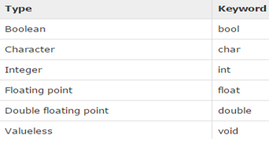
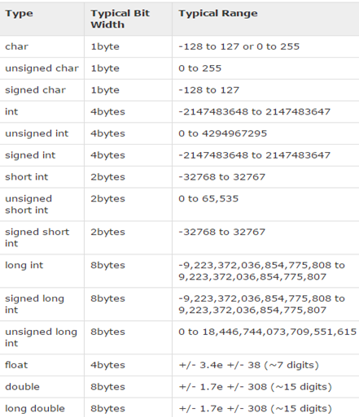
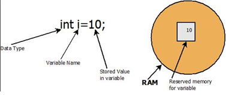

•In computer science and computer programming, a data type or simply type is a classification of data which tells the compiler or interpreter how the programmer intends to use the data.
•Most programming languages support various types of data, for example: real, integer or Boolean.
•A Data type provides a set of values from which an expression (i.e. variable, function ...) may take its values.
• The type defines the operations that can be done on the data, the meaning of the data, and the way values of that type can be stored.



•An expression in a programming language is a combination of one or more explicit values, constants, variables, operators, and functions that the programming language interprets (according to its particular rules of precedence and of association) and computes to produce ("to return", in a stateful environment) another value. This process, as for mathematical expressions, is called evaluation.